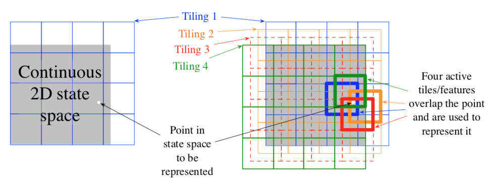
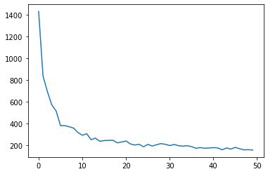
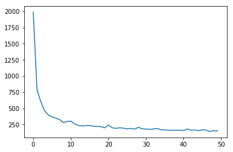
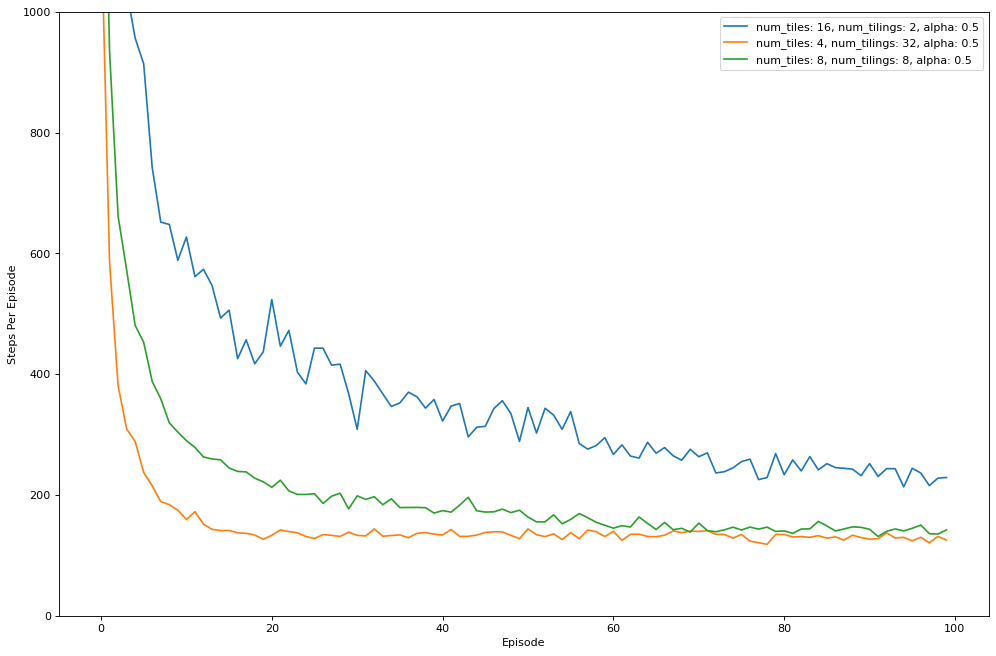

Assignment 3: Function Approximation and Control
Welcome to Assignment 3. In this notebook you will learn how to:
- Use function approximation in the control setting
- Implement the Sarsa algorithm using tile coding
- Compare three settings for tile coding to see their effect on our agent
As with the rest of the notebooks do not import additional libraries or adjust grading cells as this will break the grader.
MAKE SURE TO RUN ALL OF THE CELLS SO THE GRADER GETS THE OUTPUT IT NEEDS
1 | # Import Necessary Libraries |
In the above cell, we import the libraries we need for this assignment. You may have noticed that we import mountaincar_env. This is the Mountain Car Task introduced in Section 10.1 of the textbook. The task is for an under powered car to make it to the top of a hill:
The car is under-powered so the agent needs to learn to rock back and forth to get enough momentum to reach the goal. At each time step the agent receives from the environment its current velocity (a float between -0.07 and 0.07), and it’s current position (a float between -1.2 and 0.5). Because our state is continuous there are a potentially infinite number of states that our agent could be in. We need a function approximation method to help the agent deal with this. In this notebook we will use tile coding. We provide a tile coding implementation for you to use, imported above with tiles3.
Section 0: Tile Coding Helper Function
To begin we are going to build a tile coding class for our Sarsa agent that will make it easier to make calls to our tile coder.
Tile Coding Function
Tile coding is introduced in Section 9.5.4 of the textbook of the textbook as a way to create features that can both provide good generalization and discrimination. It consists of multiple overlapping tilings, where each tiling is a partitioning of the space into tiles.

To help keep our agent code clean we are going to make a function specific for tile coding for our Mountain Car environment. To help we are going to use the Tiles3 library. This is a Python 3 implementation of the tile coder. To start take a look at the documentation: Tiles3 documentation
To get the tile coder working we need to implement a few pieces:
- First: create an index hash table - this is done for you in the init function using tc.IHT.
- Second is to scale the inputs for the tile coder based on the number of tiles and the range of values each input could take. The tile coder needs to take in a number in range [0, 1], or scaled to be [0, 1] * num_tiles. For more on this refer to the Tiles3 documentation.
- Finally we call tc.tiles to get the active tiles back.
1 | # ----------- |
1 | # ----------- |
Section 1: Sarsa Agent
We are now going to use the functions that we just created to implement the Sarsa algorithm. Recall from class that Sarsa stands for State, Action, Reward, State, Action.
For this case we have given you an argmax function similar to what you wrote back in Course 1 Assignment 1. Recall, this is different than the argmax function that is used by numpy, which returns the first index of a maximum value. We want our argmax function to arbitrarily break ties, which is what the imported argmax function does. The given argmax function takes in an array of values and returns an int of the chosen action:
argmax(action values)
There are multiple ways that we can deal with actions for the tile coder. Here we are going to use one simple method - make the size of the weight vector equal to (iht_size, num_actions). This will give us one weight vector for each action and one weight for each tile.
Use the above function to help fill in select_action, agent_start, agent_step, and agent_end.
Hints:
1) The tile coder returns a list of active indexes (e.g. [1, 12, 22]). You can index a numpy array using an array of values - this will return an array of the values at each of those indices. So in order to get the value of a state we can index our weight vector using the action and the array of tiles that the tile coder returns:
1 |
|
1 | # ----------- |
action distribution: [ 29. 35. 936.]
1 | # ----------- |
RUN: 0
RUN: 5
Run time: 13.416615009307861

The learning rate of your agent should look similar to ours, though it will not look exactly the same.If there are some spikey points that is okay. Due to stochasticity, a few episodes may have taken much longer, causing some spikes in the plot. The trend of the line should be similar, though, generally decreasing to about 200 steps per run.

This result was using 8 tilings with 8x8 tiles on each. Let’s see if we can do better, and what different tilings look like. We will also text 2 tilings of 16x16 and 4 tilings of 32x32. These three choices produce the same number of features (512), but distributed quite differently.
1 | # --------------- |
RUN: 0
RUN: 5
RUN: 10
RUN: 15
stepsize: 0.25
Run Time: 71.2762451171875
RUN: 0
RUN: 5
RUN: 10
RUN: 15
stepsize: 0.015625
Run Time: 38.23225665092468
RUN: 0
RUN: 5
RUN: 10
RUN: 15
stepsize: 0.0625
Run Time: 42.84800481796265
<matplotlib.legend.Legend at 0x7fbda7e76910>

Here we can see that using 32 tilings and 4 x 4 tiles does a little better than 8 tilings with 8x8 tiles. Both seem to do much better than using 2 tilings, with 16 x 16 tiles.
Section 3: Conclusion
Congratulations! You have learned how to implement a control agent using function approximation. In this notebook you learned how to:
- Use function approximation in the control setting
- Implement the Sarsa algorithm using tile coding
- Compare three settings for tile coding to see their effect on our agent